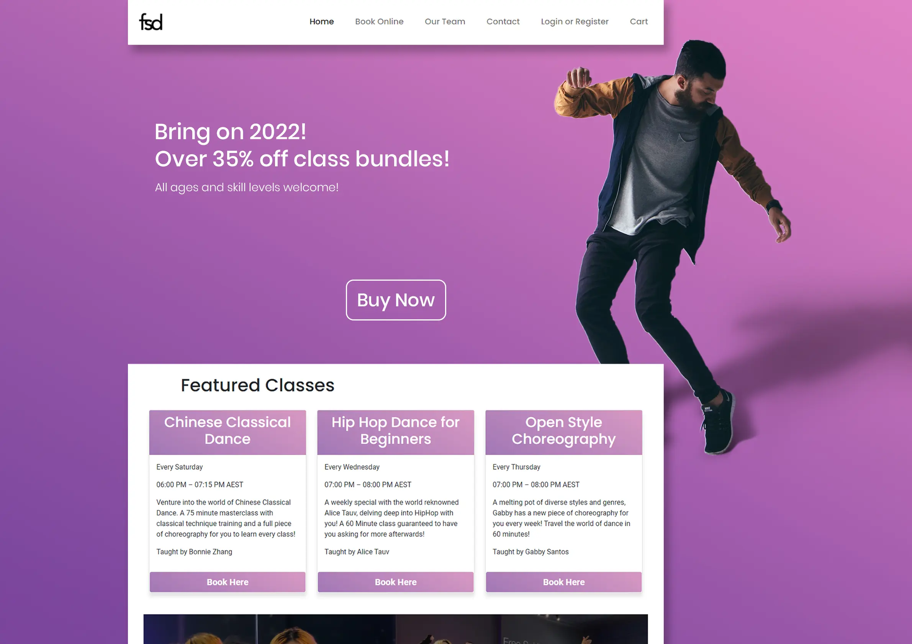
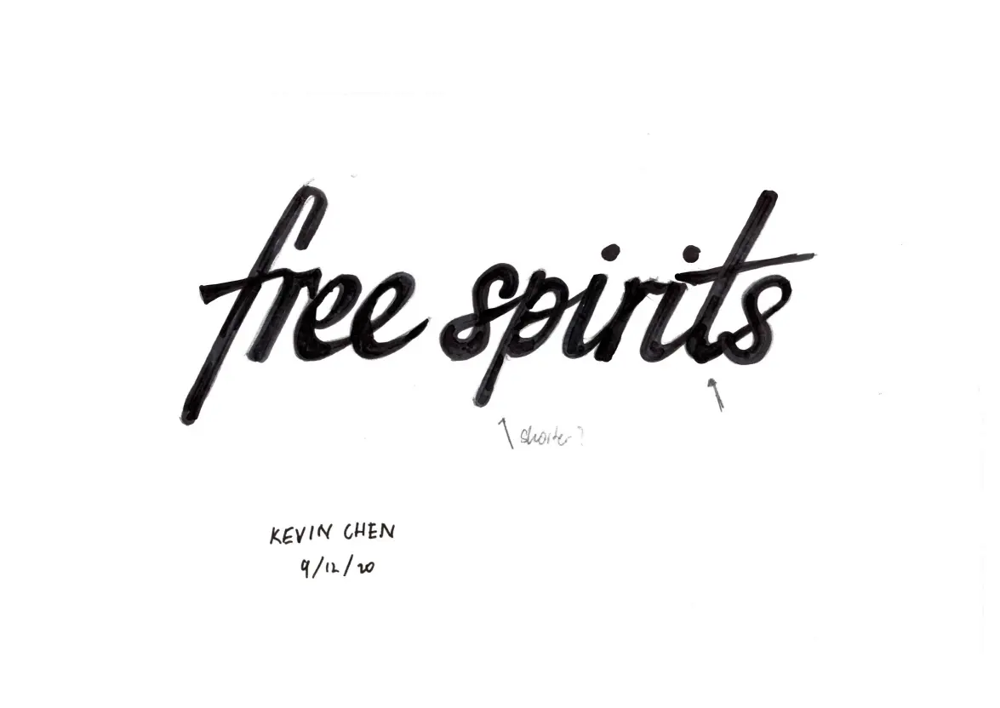
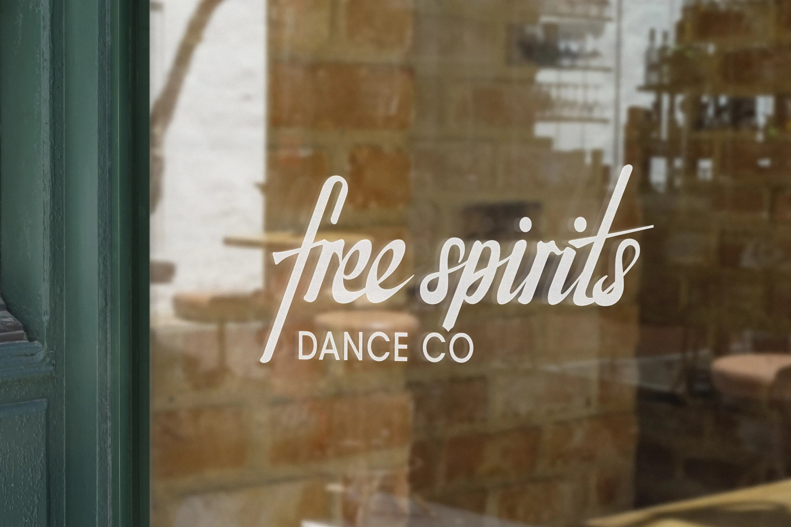
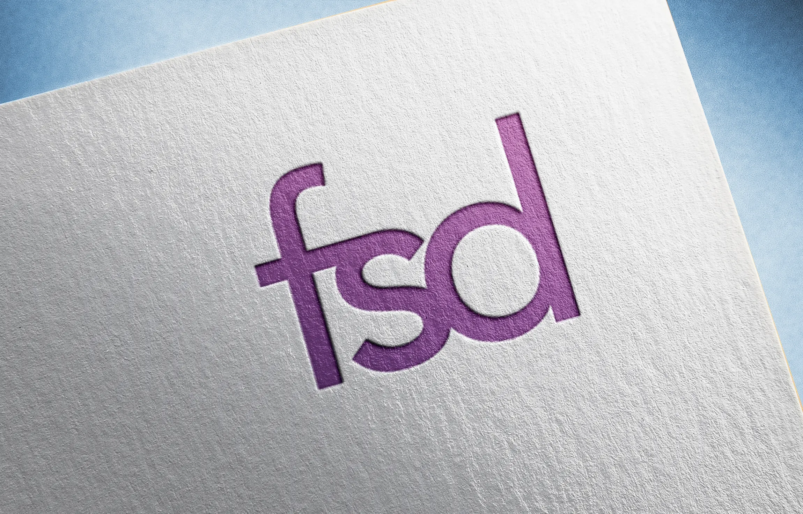
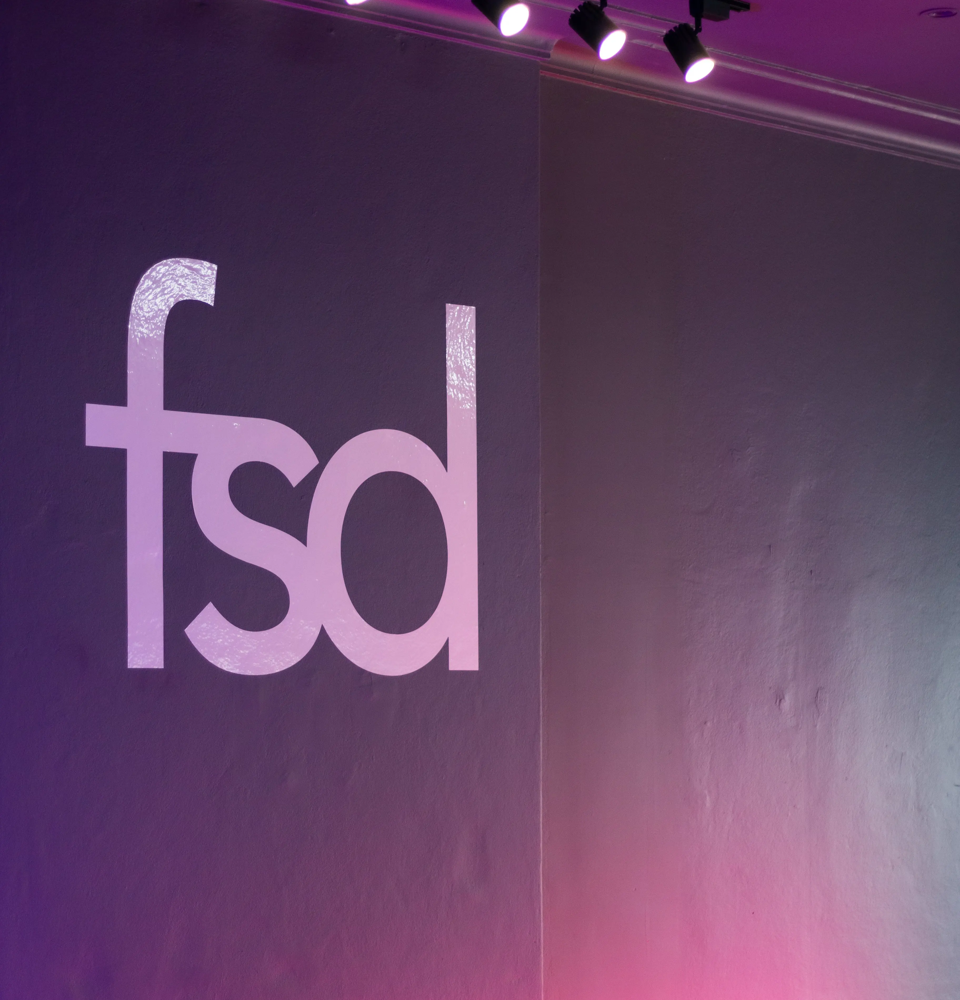

Landing page design and development
freespiritsdance.com
Part of the business' strategy in 2021 was the development of a new website that would suit a larger shift in direction. To make sure that the website was fit-for-purpose, it was designed from the ground up with a product design mindset.
This involved a lengthy design research phase, including competitor analysis, UX wireframing, style guids, UX prototypes and usability testing.
These wireframes and mockups were eventually turned into HTML and CSS layouts and populated with assets designed by me using Photoshop and Illustrator.
Custom web application design and development
As the business achieved greater success, it was apparent that some automation and integration was needed to save their staff time with bookings and administrative work. Their supplier at the time's product was not specific enough for their business. After some deliberation, the solution that was decided on was to build a lightweight web application that would target the biggest pain point in their operations.
In collaboration with product designer Mo, we designed and built an MVP with little time and resources. Despite the limited budget, we were able to transform the business's operations into something much more scalable.
Graphics design

Free Spirits Logotype
Free Spirits Dance Co. is a small business based in Haymarket, Sydney that teaches dancing to small groups of students. At the end of 2020, they approached me to help them design a logotype that will help them promote their business in photos and videos taken at their studio. The project was to be completed in a short time-frame due to an upcoming event.
After a few rounds of meetings with the business owners discussing the image they wanted for their business, I delivered a logotype that they were very happy with.
The logotype was drawn in many iterations using markers and tracing paper. It was then digitised in Adobe Illustrator.
 New FSD Identity
After enduring the 2021 lockdown, they approached me again; this time to create a more comprehensive identity that will be better suited to their business direction moving forward.
They wanted to widen their audience and expand their customer base, which involved creating a new, modern identity that would be neutral in its style and easier to use on social media and websites.
This involved adapting the work previously done on the brand to a new design language. We endeavoured to create a more professional feel to the company that would suit the expansion of its business model.
 Following the launch of their website, I also advised the business on their design moving forward. My responsibilities were to design and oversee the production of social media assets to ensure that the company maintained a strong look and feel.